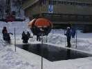
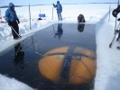
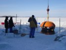

Wisconsin Field Test
The ENDURANCE field test will take place on Lake Mendota
in front of the University of Wisconsin
Madison campus. The schedule is below. Many of the team are staying at
the Lowell
Center on campus. You can check for accommodation there and
say you are with the Center for Limnology. That may be full in which
case there are other options around, but probably a little further
away.
We will be hosted by the Center for Limnology 680 N. Park St.,
Madison Water Science and Engineering Laboratory (WSEL)
660 North Park St is where the AUV will be stored and worked on when
not in the water
We will be operating off of a pier a few 100 meters to the East of
WSEL. See location.
View Larger Map
For more information contact pdoran@uic.edu
A short informal press briefing has been scheduled for 1 p.m. on
Tuesday, Feb. 12, at the UW-Madison Memorial Union, 800 Langdon St.
(Check 'Today in the Union' for the room where the briefing will be
held.) Afterward, media will be invited to see ENDURANCE as it is
tested in Lake Mendota off of Alumni Pier.
| Schedule: | |
| Saturday Feb 9, 2008: | AUV departs Stone Aerospace in Texas on flat-bed trailer towed by private vehicle |
| Sunday Feb 10: | Most personnel arrive in Madison. Hole established |
| Monday Feb 11: | 7am - noon: AUV checkout
at UW heated facility. noon - 5pm: dunk test - basically we'll hang the vehicle in the water from the crane for about the length of a planned mission and we'll observe how systems behave as it cools down. |
| Tuesday Feb 12: | 10:30am - 5pm: general maneuvering and navigation tests (sub-ice) |
| Wednesday Feb 13: | 10:30am - 5pm: power cycling tests (sub-ice) + radio location tests (assuming the ice is safe to walk on) |
| Thursday Feb 14: | 10am - 7pm: USBL, multi-beam sonar, and machine vision first tests (if up and running) |
| Friday Feb 15: | 10:30am - noon: full
mission simulation
(Mission
Planner-to-bot, run mission, download, display noon - 5pm: pack up |
| Saturday Feb 16: | team leaves |
 
{kind=link}
{kind=link}
{kind=link}